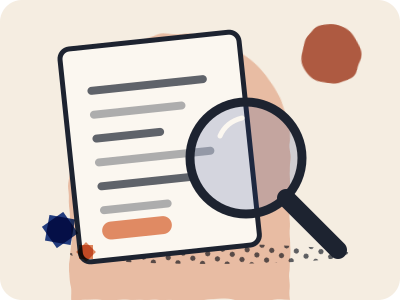

Every fact we publish
86 evidence records are cited on this site. Each shows its status, when it was reviewed, where we use it and where it comes from.

| Subject | What we state | Status | Reviewed | Used on | Sources |
|---|---|---|---|---|---|
| Airport trains to Casa Port | Some airport trains also run to Casa Port | Unconfirmed | 7 Oct 2026 | Casablanca airport to the city, day and night | Wikipedia (French), ONCF |
| Airport trains, ONCF summer 2026 plan | hourly from 06:00 to 23:00, until 13 September | Unconfirmed | 30 Sep 2026 | Casablanca airport to the city, day and night | ONCF, Echos Plus, H24info, La Relève |
| Airport trains, Ramadan 2026 timetable | hourly from 05:40 to 22:55 | Unconfirmed | 30 Sep 2026 | Casablanca airport to the city, day and night | LesEco.ma, La Vie éco |
| Aérobus journey and stops | About 30 minutes to the centre; Place des Nations Unies, Parc de la Ligue Arabe, Casablanca Finance City, Technopark and Casanearshore | Unconfirmed | 7 Oct 2026 | Casablanca airport to the city, day and night | Le Brief, Industries du Maroc, Maroc Hebdo |
| Aérobus stops at the airport | outside Arrivals at the main exit, at stops marked on the forecourt | Unconfirmed | 30 Sep 2026 | Casablanca airport to the city, day and night | Casablanca airport (ONDA) |
| Ben Youssef madrasa on the ministry index and the council listing | not on this shop | Source-checked 25 Oct 2026 | 25 Oct 2026 | Marrakech monument tickets, and when a sight is shut | E Services, E Services, page 2, Visit Marrakech, Visit Marrakech, page 2 |
| Buying and downloading a ministry monument ticket | A box opens and asks for an email, in French on the English page too. The label reads Email notification.; To download the ticket later, the page asks for that email and a number. The number field is labelled as a payment number. | Source-checked 25 Oct 2026 | 25 Oct 2026 | Marrakech monument tickets, and when a sight is shut | E Services, E Services, page 2, E Services, page 3, E Services, page 4, E Services, page 5, E Services, page 6, E Services, page 7, E Services, page 8, E Services, page 9, E Services, page 10 |
| Casa Tramway T1 and Casa Voyageurs | a stop named Casa Voyageurs; between Lissasfa and Sidi Moumen; First departure Sidi Moumen 05:30; last departure Lissasfa 22:30 | Source-checked 19 Oct 2026 | 19 Oct 2026 | Hassan II Mosque: tickets, times and what to wear | Casa Tramway, Casa Tramway, page 2 |
| Casa Tramway T2 coastal terminus | between Sidi Bernoussi and Ain Diab Plage; The line diagram does not name the mosque | Source-checked 19 Oct 2026 | 19 Oct 2026 | Hassan II Mosque: tickets, times and what to wear | Casa Tramway, Casa Tramway, page 2 |
| Casa Tramway T3 and Casa Port | a terminus named Casa Port; First departure Hay Al Wahda 05:30; last departure Casa Port 22:30 | Source-checked 19 Oct 2026 | 19 Oct 2026 | Hassan II Mosque: tickets, times and what to wear | Casa Tramway, Casa Tramway, page 2 |
| Casa Tramway transfer on one ticket | The same ticket for 2 hours after the first validation | Source-checked 19 Oct 2026 | 19 Oct 2026 | Hassan II Mosque: tickets, times and what to wear | Casa Tramway |
| Casa Voyageurs / ONCF passenger procedures | online, at station counters and at ticket machines | Source-checked 28 Sep 2026 | 28 Sep 2026 | Catching your train at Casa Voyageurs | ONCF, ONCF, page 2 |
| Casa Voyageurs / ONCF passenger procedures | shown on your phone or printed | Source-checked 28 Sep 2026 | 28 Sep 2026 | Catching your train at Casa Voyageurs, Casablanca airport to the city, day and night, Casablanca to Marrakech by train | ONCF |
| Casa Voyageurs / ONCF passenger procedures | electronic departure boards and staffed ONCF welcome points | Source-checked 28 Sep 2026 | 28 Sep 2026 | Catching your train at Casa Voyageurs | ONCF |
| Casa Voyageurs / ONCF passenger procedures | from a bridge above the tracks | Unconfirmed | 24 Sep 2026 | Catching your train at Casa Voyageurs | ONCF |
| Casa Voyageurs to Marrakech dated timetable sample | 2 h 54 min; 14:43, arriving 17:37 (2 h 54 min) | Source-checked 28 Sep 2026 | 28 Sep 2026 | Casablanca to Marrakech by train, Understand your options. Travel with confidence. | ONCF |
| Casablanca airport rail access | 50 MAD 2nd class · 70 MAD 1st class; from about 06:50 to 22:50; About 06:50 to 22:50; varies by season; About 30 minutes; Station below Terminal 1, reached from arrivals; below Terminal 1, reached from the arrivals hall | Unconfirmed | 28 Sep 2026 | Casablanca airport to the city, day and night | ONDA |
| Casablanca airport taxis | Shown on a fare list in Terminal 1; 24 hours; Desk on the arrivals forecourt; the airport taxi fares are displayed on a sign in Terminal 1 and at a desk on the arrivals forecourt; run 24 hours | Unconfirmed | 30 Sep 2026 | Casablanca airport to the city, day and night | Casablanca airport (ONDA) |
| Casablanca airport terminal shuttle | A free shuttle bus links the two terminals | Unconfirmed | 30 Sep 2026 | Casablanca airport to the city, day and night | Wikipedia (French) |
| Casablanca Aérobus | 50 MAD; every 25–40 minutes, day and night; 50 MAD flat fare; Every 25–40 minutes, day and night; Terminal 2, then Terminal 1; Cash, bank card or rechargeable card; from Terminal 2 and Terminal 1 to Casa Port, through the central boulevards; to Casa Port terminus | Source-checked 28 Sep 2026 | 28 Sep 2026 | Casablanca airport to the city, day and night, Hassan II Mosque: tickets, times and what to wear, Understand your options. Travel with confidence. | Casabus, Casablanca airport (ONDA), maroc.ma, government portal |
| Casatramway / Casabusway fares | 8 MAD; 14 MAD | Source-checked 28 Sep 2026 | 28 Sep 2026 | Casablanca tram and busway fares, Hassan II Mosque: tickets, times and what to wear, Understand your options. Travel with confidence. | Casa Tramway |
| Casatramway / Casabusway rechargeable card | 15 MAD for the card, then 6 MAD per journey | Source-checked 28 Sep 2026 | 28 Sep 2026 | Casablanca tram and busway fares, Understand your options. Travel with confidence. | Casa Tramway |
| Casatramway / Casabusway validation | Validate when you enter, when you exit, and when you enter during a connection; validate when you enter, when you exit, and when you enter during a connection | Source-checked 26 Oct 2026 | 26 Oct 2026 | Casablanca tram and busway fares | Casa Tramway |
| City bus fare printed on the tourism council site | 4 MAD | Official figure, checked 21 Oct 2026 | 21 Oct 2026 | Marrakech airport to the medina, day and night | Visit Marrakech, Visit Marrakech, page 2 |
| City taxi meters on the national tourist office site | rates are regulated and taxis have meters; does not say taxis have meters | Source-checked 26 Oct 2026 | 26 Oct 2026 | Marrakech petit taxis, Uber and ride apps in Marrakech | Visit Morocco, Visit Morocco, page 2, Visit Morocco, page 3, Visit Morocco, page 4 |
| Customs and immigration hours on the Menara aeronautical sheet | H24; 26 December 2024 | Source-checked 26 Oct 2026 | 26 Oct 2026 | Cash and ATMs at Marrakech airport | Siamaroc |
| Dar El Bacha museum | 60 MAD for foreign visitors | Source-checked 28 Sep 2026 | 28 Sep 2026 | If Jardin Majorelle is sold out, Your first Marrakech trip | Fondation nationale des musées |
| Dar El Bacha museum | Tuesday–Sunday 10:00–18:00, closed Monday; closed Monday | Source-checked 28 Sep 2026 | 28 Sep 2026 | If Jardin Majorelle is sold out, Your first Marrakech trip | Fondation nationale des musées |
| Declaring foreign currency | there is no limit on what you bring in, but cash worth 100,000 MAD or more must be declared to customs on arrival, and you need that declaration to take it out again; 100,000 MAD equivalent or more; Cash of 100,000 MAD equivalent or more | Unconfirmed | 30 Sep 2026 | Entry checks: start with your documents, not someone else's experience, Cash and ATMs at Marrakech airport | Office des Changes |
| Dirham banknotes at the border | no more than 2,000 MAD in dirham notes; no more than 2,000 MAD; No more than 2,000 MAD | Unconfirmed | 30 Sep 2026 | Entry checks: start with your documents, not someone else's experience, Cash and ATMs at Marrakech airport | Office des Changes |
| Exchange office on the Menara aeronautical sheet | an exchange office at the airport; no opening hours; not named; 26 December 2023; At the airport; Not named; No hours given; a post office at the airport | Source-checked 26 Oct 2026 | 26 Oct 2026 | Cash and ATMs at Marrakech airport | Siamaroc |
| Hassan II Mosque child ticket | English pages: free under 6, then 30 MAD; French homepage: free under 4, then 30 MAD; French visit page: free under 4 with a parent; ages 4 to 12 at 30 MAD | Sources disagree | 19 Oct 2026 | Hassan II Mosque: tickets, times and what to wear | Fondation Mosquée Hassan II, Fondation Mosquée Hassan II, page 2, Fondation Mosquée Hassan II, page 3, Fondation Mosquée Hassan II, page 4 |
| Hassan II Mosque dress and conduct | cover shoulders, torso and below the knees; The dress rule bars shorts and sleeveless clothing; Shoe bags are provided where you go in; No cigarettes and no drinks while you are on the tour; Stay on the visitor side of the chains around the Seguia | Source-checked 19 Oct 2026 | 19 Oct 2026 | Hassan II Mosque: tickets, times and what to wear | Fondation Mosquée Hassan II, Fondation Mosquée Hassan II, page 2, Fondation Mosquée Hassan II, page 3, Fondation Mosquée Hassan II, page 4 |
| Hassan II Mosque filming request | Films and documentaries need a written request at least two weeks ahead | Source-checked 19 Oct 2026 | 19 Oct 2026 | Hassan II Mosque: tickets, times and what to wear | Fondation Mosquée Hassan II |
| Hassan II Mosque foreign adult ticket | 140 MAD | Source-checked 19 Oct 2026 | 19 Oct 2026 | Hassan II Mosque: tickets, times and what to wear | Fondation Mosquée Hassan II, Fondation Mosquée Hassan II, page 2, Fondation Mosquée Hassan II, page 3, Fondation Mosquée Hassan II, page 4 |
| Hassan II Mosque guided visit | a guided tour in three stages: the prayer hall, the minaret hall and the ablution hall | Source-checked 19 Oct 2026 | 19 Oct 2026 | Hassan II Mosque: tickets, times and what to wear | Fondation Mosquée Hassan II, Fondation Mosquée Hassan II, page 2 |
| Hassan II Mosque large-group reduction | 50% off for 100 people or more | Source-checked 19 Oct 2026 | 19 Oct 2026 | Hassan II Mosque: tickets, times and what to wear | Fondation Mosquée Hassan II, Fondation Mosquée Hassan II, page 2, Fondation Mosquée Hassan II, page 3, Fondation Mosquée Hassan II, page 4 |
| Hassan II Mosque private visit | 2200 MAD; 10 people or fewer; needs a reservation | Source-checked 19 Oct 2026 | 19 Oct 2026 | Hassan II Mosque: tickets, times and what to wear | Fondation Mosquée Hassan II, Fondation Mosquée Hassan II, page 2, Fondation Mosquée Hassan II, page 3, Fondation Mosquée Hassan II, page 4 |
| Hassan II Mosque Ramadan visit times | Saturday to Thursday at 09:00, 10:00, 11:00 and 14:00, and Friday at 09:00 and 14:15; the afternoon times as 2:00 p.m. and 2:15 p.m. | Source-checked 19 Oct 2026 | 19 Oct 2026 | Hassan II Mosque: tickets, times and what to wear | Fondation Mosquée Hassan II, Fondation Mosquée Hassan II, page 2, Fondation Mosquée Hassan II, page 3 |
| Hassan II Mosque resident and student ticket | 70 MAD | Source-checked 19 Oct 2026 | 19 Oct 2026 | Hassan II Mosque: tickets, times and what to wear | Fondation Mosquée Hassan II, Fondation Mosquée Hassan II, page 2, Fondation Mosquée Hassan II, page 3, Fondation Mosquée Hassan II, page 4 |
| Hassan II Mosque vehicle approach and car park | Boulevard Sidi Mohammed Ben Abdellah and Boulevard Moulay Youssef; Pedestrians can reach the esplanade | Source-checked 19 Oct 2026 | 19 Oct 2026 | Hassan II Mosque: tickets, times and what to wear | Fondation Mosquée Hassan II |
| Hassan II Mosque video and sound devices | No video cameras or sound devices inside | Source-checked 19 Oct 2026 | 19 Oct 2026 | Hassan II Mosque: tickets, times and what to wear | Fondation Mosquée Hassan II, Fondation Mosquée Hassan II, page 2, Fondation Mosquée Hassan II, page 3, Fondation Mosquée Hassan II, page 4 |
| Hassan II Mosque visit times, 15 March to 15 September | 09:00, 10:00, 11:00, 12:00, 15:00 and 16:00; 09:00, 10:00, 15:00 and 16:00; 09:00, 10:00, 11:00, 14:00 and 15:00; 09:00, 10:00, 14:00 and 15:00 | Sources disagree | 19 Oct 2026 | Hassan II Mosque: tickets, times and what to wear | Fondation Mosquée Hassan II, Fondation Mosquée Hassan II, page 2 |
| Hassan II Mosque visit times, 16 September to 14 March | Three lists, not one; 09:00, 10:00, 11:00, 12:00 and 15:00; 09:00, 10:00 and 15:00; 09:00, 10:00, 11:00 and 14:00; 09:00, 10:00 and 14:00; 08:00, 09:00, 10:00, 11:00 and 14:00; 08:00, 09:00, 10:00 and 14:00 | Sources disagree | 19 Oct 2026 | Hassan II Mosque: tickets, times and what to wear | Fondation Mosquée Hassan II, Fondation Mosquée Hassan II, page 2, Fondation Mosquée Hassan II, page 3, Fondation Mosquée Hassan II, page 4 |
| How Orange says you start a prepaid line | free delivery inside Morocco; starts when you scan a QR code from the email; Choose a physical SIM or an eSIM | Source-checked 26 Oct 2026 | 26 Oct 2026 | SIM card at Marrakech airport | Boutique, Boutique, page 2, Boutique, page 3 |
| How Orange says you top up | a bank card, Orange Money, or a top-up card; Orange Money from the phone; the number on a top-up card | Source-checked 26 Oct 2026 | 26 Oct 2026 | SIM card at Marrakech airport | Boutique, Boutique, page 2, Boutique, page 3 |
| Jardin Majorelle | Daily 08:00–18:30, last entry 18:00; daily 08:00–18:30, last entry 18:00 | Source-checked 28 Sep 2026 | 28 Sep 2026 | Jardin Majorelle: tickets, hours and nearby museums, If Jardin Majorelle is sold out, Your first Marrakech trip | Jardin Majorelle |
| Jardin Majorelle | Tickets sold online; sold online, through the ticket shop linked from the garden’s own homepage | Source-checked 28 Sep 2026 | 28 Sep 2026 | Jardin Majorelle: tickets, hours and nearby museums, Your first Marrakech trip | Jardin Majorelle |
| Jardin Majorelle access | makes a general statement about access for visitors with reduced mobility | Unconfirmed | 28 Sep 2026 | Jardin Majorelle: tickets, hours and nearby museums | Jardin Majorelle |
| Marinid madrasa on the ministry shop is in Salé | the Marinid madrasa in Salé, at 80 MAD for a foreign adult; the Marinid madrasa in Salé; 80 MAD; 40 MAD, from 7 to 13 | Source-checked 25 Oct 2026 | 25 Oct 2026 | Marrakech monument tickets, and when a sight is shut | E Services, E Services, page 2, E Services, page 3, E Services, page 4 |
| Marrakech airport bus 19 on the regional tourism council site | 30 MAD; every 20 minutes; 06:00 to 21:30; bus 19; 06:00 and 21:30; 21:30 | Official figure, checked 21 Oct 2026 | 21 Oct 2026 | Marrakech airport to the medina, day and night | Visit Marrakech, Visit Marrakech, page 2 |
| Marrakech airport exchange counters | in the public hall; in the customs area; in the public hall, some also in the customs area; some are also listed in the customs area; gives no opening hours | Source-checked 20 Oct 2026 | 20 Oct 2026 | Cash and ATMs at Marrakech airport, Marrakech airport to the medina, day and night | ONDA, ONDA, page 2 |
| Marrakech airport taxi desk announcement | 2023; card or cash; 24 hours a day, 7 days a week; no fare; by card or cash before the ride; Card or cash at a desk, in a 2023 announcement; 12 May 2023; A desk at the arrivals exit: pay by card or cash before the ride, then scan a receipt for a ticket with your taxi number | Source-checked 20 Oct 2026 | 20 Oct 2026 | Cash and ATMs at Marrakech airport, Marrakech airport to the medina, day and night | ONDA |
| Marrakech airport taxi rank and bus | a taxi station on the esplanade; A taxi station on the esplanade; 20 minutes | Source-checked 20 Oct 2026 | 20 Oct 2026 | Cash and ATMs at Marrakech airport, Marrakech airport to the medina, day and night | ONDA, ONDA, page 2 |
| Marrakech city buses, operator reported in the press | Supratours, an ONCF subsidiary, reported as starting city buses on 14 December 2025, after ALSA; 15 December 2025; SGTUPM, a company held by ONCF and Supratours; No fare in dirhams, and no airport line number, in those articles; fares then in force kept until the end of the 2025 Africa Cup of Nations | Unconfirmed | 20 Oct 2026 | Marrakech airport to the medina, day and night | Médias24, Médias24, page 2, Médias24, page 3 |
| Marrakech Menara airport code and distance | RAK; 3 km from the city centre | Source-checked 20 Oct 2026 | 20 Oct 2026 | Marrakech airport to the medina, day and night | ONDA, ONDA, page 2 |
| Ministry shop prices for four Marrakech monuments | 100 MAD; 50 MAD, from 7 to 13; Ministère de la Jeunesse, de la Culture et des Sports; 30 MAD; 10 MAD, from 7 to 13; from 7 to 13 | Source-checked 25 Oct 2026 | 25 Oct 2026 | Marrakech monument tickets, and when a sight is shut | E Services, E Services, page 2, E Services, page 3, E Services, page 4, E Services, page 5, E Services, page 6, E Services, page 7, E Services, page 8 |
| ONCF assistance booking | free help boarding and leaving the train for travellers with reduced mobility, booked 48 hours ahead at a station or on 2255 | Source-checked 28 Sep 2026 | 28 Sep 2026 | Catching your train at Casa Voyageurs | ONCF |
| ONCF change availability | depends on seats being available on the new train, and you pay any fare difference | Source-checked 28 Sep 2026 | 28 Sep 2026 | Casablanca to Marrakech by train | ONCF |
| ONCF fare flexibility | cannot be exchanged or refunded; non-flex, semi-flex and flex fares; non-flex cannot be exchanged or refunded | Source-checked 28 Sep 2026 | 28 Sep 2026 | Casablanca to Marrakech by train | ONCF |
| ONCF luggage | 1.2 m × 0.6 m × 0.4 m | Source-checked 28 Sep 2026 | 28 Sep 2026 | Catching your train at Casa Voyageurs, Casablanca to Marrakech by train | ONCF |
| ONCF machine payment | bank cards only, not cash; Card only at ONCF ticket machines | Source-checked 28 Sep 2026 | 28 Sep 2026 | Catching your train at Casa Voyageurs, Casablanca airport to the city, day and night | ONCF |
| ONCF online cancellation timing | up to 30 minutes before departure | Source-checked 28 Sep 2026 | 28 Sep 2026 | Casablanca to Marrakech by train | ONCF |
| Orange checkout wording for a document and a phone number | a passport, an identity card or a residence permit; a national identity card or a residence permit; a Moroccan number starting 06, 07 or 05; An identity document is requested when a physical card is delivered; at most 10 characters; French keyboard letters; 10 digits | Source-checked 26 Oct 2026 | 26 Oct 2026 | SIM card at Marrakech airport | Boutique, Boutique, page 2, Boutique, page 3 |
| Orange Marhaba prepaid cards | 120 MAD, unlimited internet, 7 days; 220 MAD, unlimited internet, 14 days; 320 MAD, unlimited internet, 30 days; 120 MAD; 220 MAD; 320 MAD; unlimited internet; 7 days; 14 days; 30 days | Source-checked 26 Oct 2026 | 26 Oct 2026 | SIM card at Marrakech airport | Boutique, Boutique, page 2, Boutique, page 3 |
| Orange maximum-validity line | Up to 3 months; up to 3 months | Source-checked 26 Oct 2026 | 26 Oct 2026 | SIM card at Marrakech airport | Boutique, Boutique, page 2, Boutique, page 3 |
| Orange prepaid page, 5G line and 4G+ line | The Arabic block says 4G+ and does not say 5G; English and French say 5G/4G+. Arabic says 4G+ and does not say 5G; English and French say 5G in the headline. Arabic says 4G+ and does not say 5G | Sources disagree | 26 Oct 2026 | SIM card at Marrakech airport | Boutique, Boutique, page 2, Boutique, page 3 |
| Orange prepaid SIM and eSIM price | 20 MAD; 20 MAD of credit; 30 days | Source-checked 26 Oct 2026 | 26 Oct 2026 | SIM card at Marrakech airport | Boutique, Boutique, page 2, Boutique, page 3 |
| Pass Jeunes row on four Marrakech monument pages | 0 MAD | Source-checked 25 Oct 2026 | 25 Oct 2026 | Marrakech monument tickets, and when a sight is shut | E Services, E Services, page 2, E Services, page 3, E Services, page 4, E Services, page 5, E Services, page 6, E Services, page 7, E Services, page 8 |
| Petit taxis and the airport | may not go to the airport, which is outside their city area; grand taxis serve it | Unconfirmed | 30 Sep 2026 | Casablanca airport to the city, day and night | La Vie éco |
| Pierre Bergé Museum | Daily 08:30–18:00, last entry 17:30 | Source-checked 28 Sep 2026 | 28 Sep 2026 | Jardin Majorelle: tickets, hours and nearby museums, If Jardin Majorelle is sold out, Your first Marrakech trip | Jardin Majorelle |
| Registering a prepaid SIM | record the identity of anyone buying a prepaid SIM, and cards without it are deactivated | Unconfirmed | 30 Sep 2026 | Choose a connection that works for you | La Vie éco, CIO Mag |
| Ride apps and the law | carrying paying passengers without a transport licence, or in a private car, is an offence; is not the authority for app-based urban transport (the Interior Ministry is); road-transport law has no provision for such apps | Unconfirmed | 30 Sep 2026 | Casablanca airport to the city, day and night, Marrakech airport to the medina, day and night, Uber and ride apps in Marrakech | TelQuel, Médias24, H24info |
| Specifications for tourist road transport | a personal approval from the transport commission and a special authorization card for each vehicle; 7 years; replaces the specifications signed on 5 October 2012; a minimum fleet; does not apply to operators already working before the specifications of 5 October 2012; do not name a ride app, a fare, or a pickup point | Source-checked 27 Oct 2026 | 27 Oct 2026 | Uber and ride apps in Marrakech | Mtaess, Mtaess, page 2 |
| Supratours website and Marrakech city buses | Supratours’ own site is an intercity coach planner, not a city or airport bus timetable | Source-checked 20 Oct 2026 | 20 Oct 2026 | Marrakech airport to the medina, day and night | Supratours |
| Taxi figure the tourism council prints for Menara airport | 70 MAD by day and 100 MAD at night; at any hour; 3 kilometres from the centre | Official figure, checked 21 Oct 2026 | 21 Oct 2026 | Marrakech airport to the medina, day and night | Visit Marrakech, Visit Marrakech, page 2 |
| Taxi stations and collective taxis on the tourism council pages | near the Koutoubia, at Sidi Mimoun and at Bab Doukkala; once the car is full; can be negotiated; can lengthen the wait | Source-checked 26 Oct 2026 | 26 Oct 2026 | Marrakech petit taxis, Uber and ride apps in Marrakech | Visit Marrakech, Visit Marrakech, page 2 |
| Uber in Morocco | resumed service in Casablanca and Marrakech on 27 November 2025, with licensed transport vehicles and drivers only | Unconfirmed | 30 Sep 2026 | Casablanca airport to the city, day and night | TelQuel, Médias24, Le Desk |
| Uber newsroom and Uber city lists | is offered in Marrakech and Casablanca, only with licensed transport vehicles, as UberX and UberXL; do not name Morocco, Maroc, Marrakech or Casablanca; no fare; 27 November 2025; The English opening line says the app will be available that day; The French opening line says the app is already reachable; Both newsroom pages name cashless payment as a feature and do not say cash is refused; Neither page says whether a car may collect a rider at Marrakech Menara airport | Sources disagree | 27 Oct 2026 | Uber and ride apps in Marrakech | UBER, UBER, page 2, UBER, page 3, UBER, page 4 |
| Uber’s own account of Marrakech and Casablanca | is offered in Marrakech and Casablanca, only with licensed transport vehicles, as UberX and UberXL; Neither page says whether a car may collect a rider at Menara | Unconfirmed | 20 Oct 2026 | Marrakech airport to the medina, day and night | UBER, UBER, page 2 |
| US travel advisory, Morocco | Level 2, “Exercise increased caution”, reissued 21 April 2025 | Source-checked 28 Sep 2026 | 28 Sep 2026 | Prepare with current information | US State Department |
| Villa Oasis private garden | Closed Wednesday | Source-checked 28 Sep 2026 | 28 Sep 2026 | Jardin Majorelle: tickets, hours and nearby museums, Your first Marrakech trip | Jardin Majorelle |
| Visiting-hours line on the ministry ticket shop | 9h-17h | Source-checked 25 Oct 2026 | 25 Oct 2026 | Marrakech monument tickets, and when a sight is shut | E Services, E Services, page 2, E Services, page 3, E Services, page 4, E Services, page 5, E Services, page 6, E Services, page 7, E Services, page 8, E Services, page 9, E Services, page 10, E Services, page 11, E Services, page 12, E Services, page 13, E Services, page 14 |
| What a taximeter is, in the 2012 industry order | 26 July 2012; calculate and display the price from the distance, the time, or both; 6084; 20 September 2012; readable by day and by night; once a year | Source-checked 26 Oct 2026 | 26 Oct 2026 | Marrakech petit taxis, Uber and ride apps in Marrakech | Mcinet |
| Who the ministry terms page exempts from entry fees | Moroccans pay nothing on Friday, or on the first day of a religious or national holiday; The terms page gives reduced-mobility visitors free entry and names no day. On the English page, that line is tied to Friday, so read the terms page before you rely on it; order 834.18 of 22 March 2018, as later amended | Source-checked 25 Oct 2026 | 25 Oct 2026 | Marrakech monument tickets, and when a sight is shut | E Services, E Services, page 2, E Services, page 3, E Services, page 4, E Services, page 5, E Services, page 6, E Services, page 7, E Services, page 8, E Services, page 9, E Services, page 10 |
| YSL Museum closing time | 10:00–18:00, last entry 17:30, closed Wednesday; 140 MAD; closed Wednesday | Source-checked 28 Sep 2026 | 28 Sep 2026 | Jardin Majorelle: tickets, hours and nearby museums, If Jardin Majorelle is sold out, Your first Marrakech trip | Musée YSL Marrakech, Musée YSL Marrakech, page 2 |
Source-checked means we read the operator’s or authority’s own page on that date. Unconfirmed means our sources are indirect or incomplete. Field-checked, once it appears, means we saw it ourselves on that date.